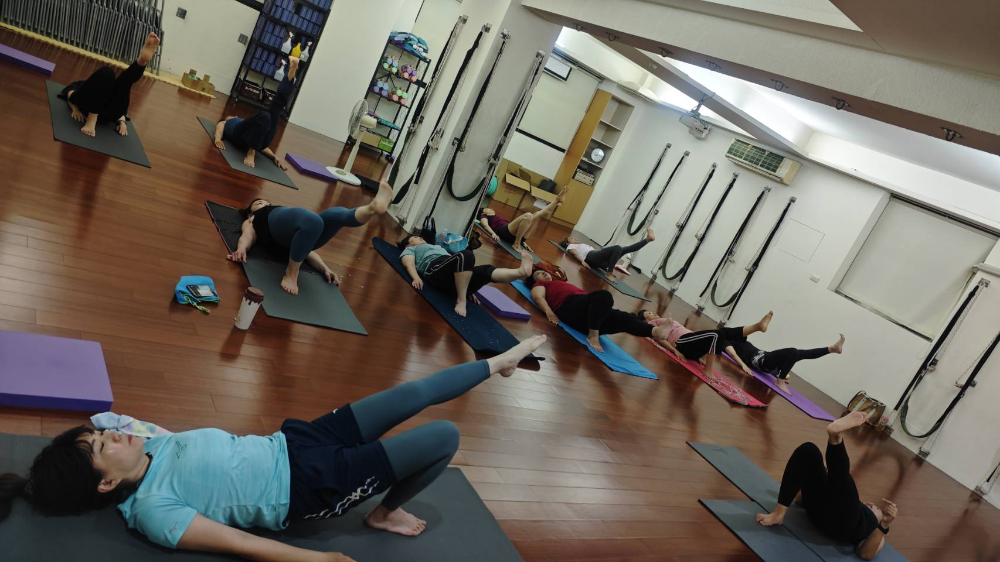

團課、一對一、零基礎入門班，第一次來該選哪一種？

- 踏入教室前的最大阻礙往往不是肢體難度，而是對未知課程形式的疑慮與怕跟不上的焦慮。
- 零基礎入門班專為無運動經驗者設計，從垂直扎根與安全呼吸展開，不預設任何動作基礎。
- 精緻小班團課具備固定時間節奏與同儕支持，老師現場巡場提供輔具退階，適合維持規律練習。
- 一對一私人調整提供百分之百專注視角與毫釐不差的向量微調，適合複雜代償、舊傷或術後族群。
想開始接觸壁繩瑜伽，卻在預約頁面前反覆猶豫「我到底適合報哪一種課」——這其實是絕大多數新手真正卡住的第一步。有人擔心自己筋骨太硬會拖累團課同學，有人疑慮一對一是否太嚴肅或負擔過重。本文從運動神經學、代償嚴重度與教學力學視角，深入剖析三種上課形式的本質差異，助你依現況選出最安心的起點。
零基礎入門班
首次 NT$399，週一固定時段。由最基礎的骨盆中立位與呼吸開始拆解，不使用生澀術語，建立大腦安全感與動作信心。
精緻小班團課
固定班表與流動節奏，學員在同儕共振中練習。老師現場巡場提供個人化輔具降階，適合希望建立每週穩定練習規律者。
一對一私人調整
首次體驗 NT$1,500。全程單獨由老師專注引導，結合 AI 體態角度檢測與深層筋膜放鬆，適合舊傷、複雜代償與精準微調需求。
選項一：零基礎入門班 —— 專為「未曾接觸、擔心僵硬」打造的安全港
如果你過去從未接觸過瑜伽、自認筋骨僵硬前彎碰不到腳踝，甚至對壁繩懸掛感到些許未知恐懼，零基礎入門班就是為這樣的心情量身定制的起點。這堂課的核心教學目標不是挑戰高難度體位法，而是幫助學員關閉大腦的「防禦性張力鎖定」：
- 建立基礎動作語彙：老師不會直接丟出難懂的專有名詞，而是用日常的生活力學語言說明「坐骨如何垂直扎根」、「肋骨如何自然下沉收納」，讓大腦清楚理解關節的擺放空間。
- 大量使用輔具降階：手碰不到地面就墊上高密度瑜伽磚，腿後側緊繃就微屈膝或透過壁繩卸除重力，絕不允許學員用折腰或聳肩硬壓代償。
- 解除懸掛恐懼：由老師親自引導壁繩扁帶的骨骼卡位與登山扣環的承重實感，循序漸進適應身體被繩索安全承托的失重感，徹底破除初學者的緊張心理。
目前常設週一班級，涵蓋早上 09:30（60 分鐘，晨間溫和喚醒）與晚間 19:00–20:30（90 分鐘，下班後完整深層舒緩），學員可依生活作息自由選擇。

選項二：精緻小班團課 —— 建立每週規律練習與動態神經適應的最佳路徑
團課是多數運動愛好者維持長期體態的最佳載體。很多人聽到「團體課」會直覺聯想到連鎖健身房裡幾十個人擠在鏡子前、老師在台上自顧自帶動作的畫面。但鑫彥瑜珈的壁繩團課維持嚴格的精緻小班人數，其力學優勢在於：
- 即時個人化退階（Regression）：在同一組動作中，老師會巡迴檢視每位學員的骨骼對位。當發現學員因胸椎卡死出現腰椎代償時，會立刻遞上抱枕或調整繩圈高度，絕不要求所有人勉強做到相同幅度。
- 同儕共振激勵效應：在群體呼吸與專注的氛圍下，大腦的疲勞感知閾值會適度提升，更容易維持練習的持續性與專注度。
- 經濟與時間效益兼具：相較於一對一私人課，小班團課擁有更平易近人的課堂成本，讓體態調整能夠自然融入日常生活的長久節奏中。
若你平時已有散步、慢跑或基本運動習慣，且沒有處於急性神經刺痛發作期，團課是最自然且具延續性的起點選擇。
選項三：一對一私人調整 —— 毫釐不差的力學檢視與客製化深層修復
如果你的身體狀況較為特殊，例如伴隨長年反覆的肩頸僵硬、腰部刺痛舊傷、雙側肌力嚴重失衡，或者曾因自己練習受傷而心存陰影，那麼一對一私人指導將是最精準且安全的投資：
- 百分之百專注視角：整堂課無須配合他人節奏，老師的所有視線與注意力完全聚焦於你的神經反應與動作品質。
- 三維力學向量導引：針對學員的骨骼幾何線條，老師透過雙手精準的觸覺點撥（Tactile Feedback），瞬間切斷代償肌群的錯誤放電，直接喚醒深層多裂肌與前鋸肌。
- 整合式流程體驗：一對一課程包含完整的 AI 體態角度分析、約 50 分鐘的專屬壁繩動態力學調整，以及針對深層激痛點的徒手筋膜放鬆，全程約 70 分鐘，首次體驗價 NT$1,500。
三維客觀分流指標：我現在到底該選哪一種？
為了避免在主觀感覺中糾結，你可以透過以下三個客觀維度評估自己目前的身體現況：
| 評估維度 | 建議優先選擇 | 背後的力學考量 |
|---|---|---|
| 疼痛指數 VAS 評分 VAS ≥ 4 分（活動即有明確刺痛或劇烈酸楚） | 一對一私人指導 | 此時周邊代償極度強勢，進入團課容易誤用代償加劇組織磨損，必須由老師單獨監控無痛窗格。 |
| 結構與骨骼條件 脊椎側彎 Cobb 角 > 15°、人工關節置換術後 | 一對一私人指導 | 具備特定角度禁忌（如人工髖關節屈曲角度限制），需要完全客製化的安全活動軌跡。 |
| 運動經驗與心理門檻 完全無經驗、自認僵硬、害怕跟不上 | 零基礎入門班 | 以平緩節奏與日常語言引導，消除大腦對器材與陌生環境的威脅感知。 |
| 日常生活規律 無急性劇痛、想維持每週固定動態習慣 | 精緻小班團課 | 透過同儕節奏與固定時段建立大腦長期的運動神經迴路，最具延續效益。 |
破除兩大選課迷思：不神化私人課，也不輕忽團課價值
在選課決策中，我們經常遇到學員陷入極端的思維誤區：
- 迷思一：一對一私人課是「一次見效的速成班」？體態是數年甚至數十年日常神經肌肉習慣的累積。一對一能幫助你在最短時間內抓出代償盲點、建立本體感受記憶，但仍需要後續持續的動態練習來維持。最理想的規劃是一對一建立方向後，逐步轉入常態團課穩定鞏固。
- 迷思二：團課會不會學不到東西、只能盲目跟著做？在專業小班制中，壁繩的核心功能就是提供 30%～70% 的自重卸載。即使在團課裡，每個人也都是在繩索的安全支持下探索自身的可控活動度，並非與同學競爭拉伸幅度。
醫療急症紅旗：何時嚴禁直接進入團課？
運動雖有助於調整體態，但在特定急性病理狀態下，切勿擅自報名團體課硬練，應立即尋求骨科、神經科或復健科醫師的醫療診斷：
- 神經根性電擊痛：頸部或下背部動作引發如觸電般的單側手臂放射刺痛、腿部發麻或肌肉無力。
- 馬尾症候群（Cauda Equina Syndrome）：會陰部感覺麻木（鞍區麻木）、突發性大小便失禁或嚴重排尿困難。
- 急性扭傷與紅腫熱痛：關節急性發炎期、局部明顯發熱腫脹、未癒合之骨折或骨裂。
- 未受控之嚴重心血管疾病：未經藥物控制的高血壓（收縮壓 > 160 mmHg）、青光眼急性期或嚴重眩暈發作。
還在猶豫選哪一種？兩個方向都可以先跨出第一步
不確定自己是哪一種狀況，可以先做檢測讓老師當面建議；已經知道自己想從零基礎開始，也可以直接約入門班。
本文為課程形式介紹與一般選課建議，非醫療診斷或治療。如有慢性疼痛、近期受傷或特殊病史，請先諮詢合格醫療專業人員，並提前告知授課老師。
常見問題
完全沒有運動習慣、筋骨非常僵硬，第一次該選哪一種？
建議優先選擇專為無基礎設計的「零基礎入門班」或先進行「首次體驗 NT$299 AI 體態檢測」。零基礎班不追求高難度動作，而是專注於骨盆中立位扎根與呼吸擴胸；若身體伴隨慢性緊繃或不適，先透過檢測讓老師當面解讀關節活動度，能更精準確立安全起點。
團課會不會人數太多，老師無法照顧到我的動作安全？
鑫彥瑜珈採取精緻小班制教學，並非大型連鎖健身房的百人團課。在課堂中，老師會持續巡場觀察每位學員的骨骼對位與代償狀況，並隨時依個人活動度給予瑜伽磚、抱枕或壁繩長度的降階微調，絕不強迫所有人做到相同幅度。
什麼情況下必須優先選擇一對一私人指導？
當你處於急性期後不適（VAS 疼痛評分 4 分以上）、具有複雜舊傷病史、脊椎側彎 Cobb 角較大、人工關節置換術後，或對自身肢體控制嚴重缺乏信心時，強烈建議預約一對一私人調整。老師將全程一對一監控力學向量，阻斷代償迴路並提供客製化深層放鬆。
零基礎入門班跟一般團課的實質差異在哪裡？
零基礎入門班的教學節奏平緩，會詳細拆解每個動作的力學原理與安全邊界，不使用複雜瑜伽梵文術語，重點在於建立大腦與身體的連結；一般團課學員多已熟悉基本動作流程，課堂節奏更具流動性與肌耐力鍛鍊，適合已有規律活動習慣者。
如果第一堂課選了之後覺得不合適，可以更換課程型態嗎？
完全可以。課程形式只是當前身體狀態的切入點，絕非不可更改的限制。許多學員從零基礎入門班建立信心後轉入常態團課，也有團課學員在特定關節卡關時預約單堂一對一深入微調，兩種路徑隨時能依個人體態進展彈性調整。